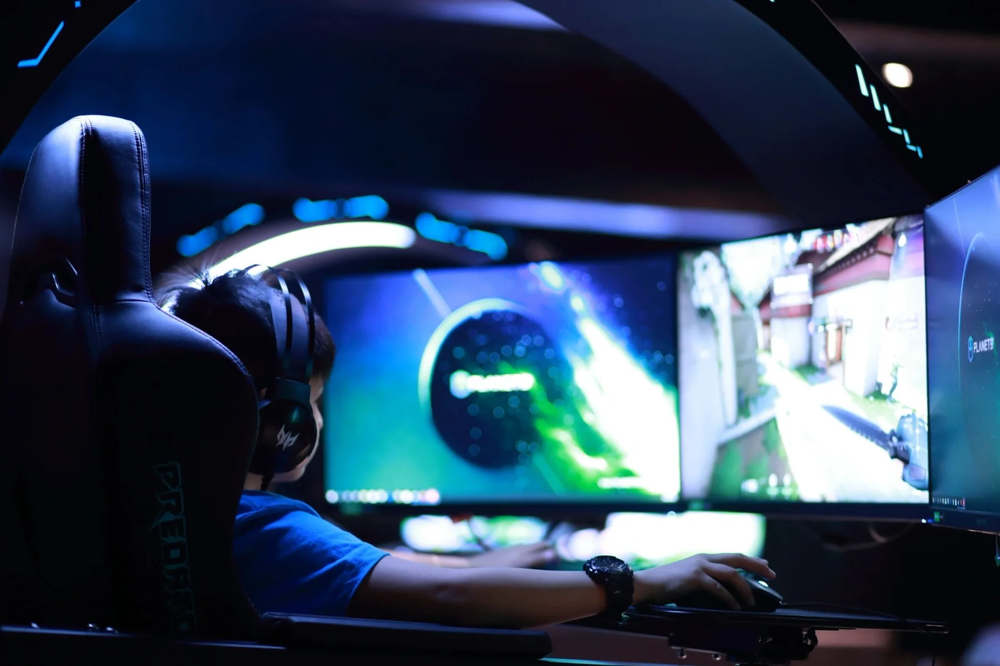
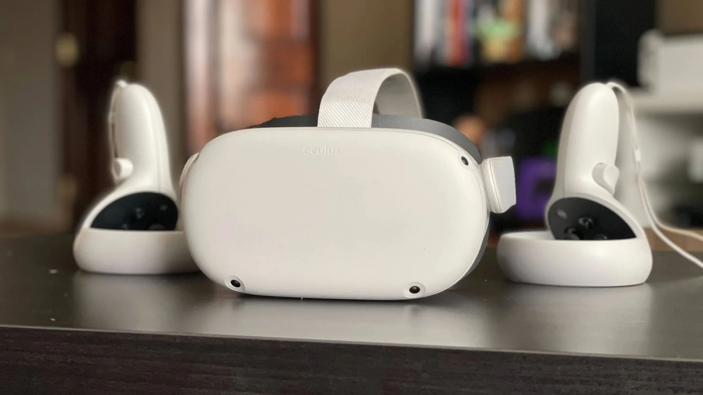
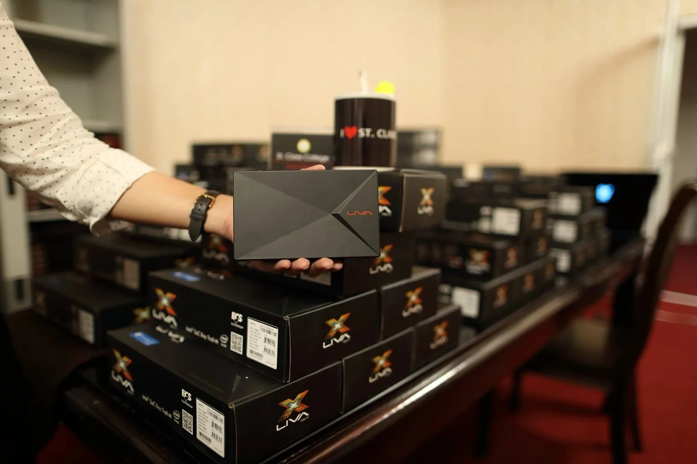
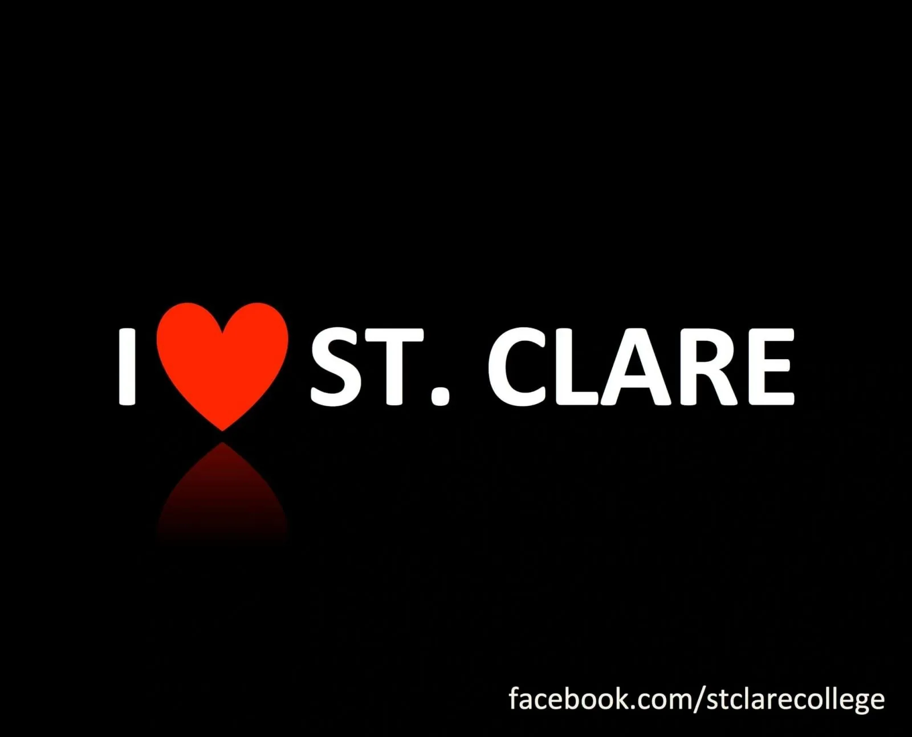

Home / Campus life
Life atSt. Clare
E-boards in every classroom, a Virtual Lab, our own broadcast channels and a community that keeps learning online.










A week on campus
From the Monday flag ceremony to the Virtual Studio.
Monday, 7:00 AM
Virtual flag ceremony
The whole community gathers online to start the week.
Classes
E-boards in all 95 classrooms
The first college in the country to replace every blackboard with an e-board.
Lab time
Virtual Lab
VR + AR = MR with the Predator Thronos and the Mixed Reality facility by Acer.
3rd floor
Library and Learning Resource Center
Study space, enlistment and the ProQuest-powered e-Library.
Broadcasts
St. Clare Virtual Studio
Webinars, parents' orientations and commencement broadcasts.
Every week
SCO Online channels
SCO Online, SCO Live, Education That Matters, Heart of a Champion, Sports Desk, Virtual Lab, Leading Women, Health Talk, Digital First.
Inside the Virtual Lab
Visit St. Clare College and experience the immersive technology behind the Predator Thronos and the Mixed Reality facility by Acer.
Virtual Lab3 videos
State-of-the-art facilities
The library, the Virtual Lab and mixed-reality learning. Select a photo to enlarge it.
Campus in pictures

Facilities at a glance
- E-boards in all 95 classrooms
- Air-conditioned classrooms and restrooms
- Computer laboratories with stacked servers
- Library and enlistment area on the 3rd floor
- Virtual Lab: Predator Thronos and Mixed Reality by Acer
- St. Clare Virtual Studio
Digital citizenship
Online learning comes with responsibilities. These policies guide life on St. Clare Online.
See the campus
Visit Zabarte Road, Caloocan City, 9:00 AM to 5:00 PM.